vignettes/language_identification.Rmd
language_identification.RmdIn this blog post, I’ll explain how to perform Language Identification with the fastText R package and I’ll create a benchmark by including other language identification R packages, i.e.
I didn’t use any packages that make calls to API’s because the dataset I’ll utilize consists of more than 50.000 thousand observations.
Based on my search on the web, currently, the WiLI benchmark dataset is among the ones that contain multilingual texts (Wikipedia extracts of 235 languages) and the corresponding labels as well. It can be downloaded either from Zenodo or from my Datasets Github repository.
We currently live in the Covid-19 Era and there are many human rights violation incidents (more often than before), therefore I decided to include in this benchmark also the human rights declarations of the 3 most spoken languages (Chinese, Enlish, Spanish) because they are more relevant than ever. The human rights declarations of the mentioned languages can be downloaded either from the official website or from my Datasets Github repository, and I think it deserves a read from time to time so that we don’t forget our rights as human beings.
The fastText language identification pre-trained models support currently 176 languages. The following character vector shows the available language isocodes.
fasttext_supported_languages = c('af', 'als', 'am', 'an', 'ar', 'arz', 'as', 'ast', 'av',
'az', 'azb', 'ba', 'bar', 'bcl', 'be', 'bg', 'bh', 'bn',
'bo', 'bpy', 'br', 'bs', 'bxr', 'ca', 'cbk', 'ce', 'ceb',
'ckb', 'co', 'cs', 'cv', 'cy', 'da', 'de', 'diq', 'dsb',
'dty', 'dv', 'el', 'eml', 'en', 'eo', 'es', 'et', 'eu',
'fa', 'fi', 'fr', 'frr', 'fy', 'ga', 'gd', 'gl', 'gn',
'gom', 'gu', 'gv', 'he', 'hi', 'hif', 'hr', 'hsb', 'ht',
'hu', 'hy', 'ia', 'id', 'ie', 'ilo', 'io', 'is', 'it',
'ja', 'jbo', 'jv', 'ka', 'kk', 'km', 'kn', 'ko', 'krc',
'ku', 'kv', 'kw', 'ky', 'la', 'lb', 'lez', 'li', 'lmo',
'lo', 'lrc', 'lt', 'lv', 'mai', 'mg', 'mhr', 'min', 'mk',
'ml', 'mn', 'mr', 'mrj', 'ms', 'mt', 'mwl', 'my', 'myv',
'mzn', 'nah', 'nap', 'nds', 'ne', 'new', 'nl', 'nn', 'no',
'oc', 'or', 'os', 'pa', 'pam', 'pfl', 'pl', 'pms', 'pnb',
'ps', 'pt', 'qu', 'rm', 'ro', 'ru', 'rue', 'sa', 'sah',
'sc', 'scn', 'sco', 'sd', 'sh', 'si', 'sk', 'sl', 'so',
'sq', 'sr', 'su', 'sv', 'sw', 'ta', 'te', 'tg', 'th', 'tk',
'tl', 'tr', 'tt', 'tyv', 'ug', 'uk', 'ur', 'uz', 'vec',
'vep', 'vi', 'vls', 'vo', 'wa', 'war', 'wuu', 'xal', 'xmf',
'yi', 'yo', 'yue', 'zh')For illustration purposes we’ll subset the WiLI dataset to the 2-letter isocodes of the supported fastText languages. For this purpose we’ll use the ISOcodes R package and especially the ISO_639_2 function which includes the required 2- and 3-letter isocodes and also the available full names of the languages,
isocodes = ISOcodes::ISO_639_2
# head(isocodes)
comp_cases = complete.cases(isocodes$Alpha_2)
isocodes_fasttext = isocodes[comp_cases, ]
# dim(isocodes_fasttext)
idx_keep_fasttext = which(isocodes_fasttext$Alpha_2 %in% fasttext_supported_languages)
isocodes_fasttext = isocodes_fasttext[idx_keep_fasttext, ]
isocodes_fasttext = data.table::data.table(isocodes_fasttext)
# isocodes_fasttext
lower_nams = tolower(isocodes_fasttext$Name)
lower_nams = trimws(as.vector(unlist(lapply(strsplit(lower_nams, "[;, ]"), function(x) x[1]))), which = 'both') # remove second or third naming of the country name
isocodes_fasttext$Name_tolower = lower_nams
isocodes_fasttext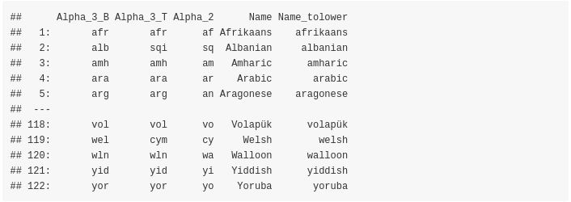
The next function will be used to compute and print the accuracy in all cases,
print_accuracy = function(size_input_data,
true_data,
preds_data,
method) {
cat(glue::glue("Total Rows: {size_input_data}"), '\n')
rnd_2 = round(length(preds_data)/size_input_data, 4)
msg_2 ="Predicted Rows: {length(preds_data)} ({rnd_2 * 100}% predicted)"
cat(glue::glue(msg_2), '\n')
cat(glue::glue("Missing Values: {size_input_data - length(preds_data)}"), '\n')
rnd_4 = round(sum(true_data == preds_data) / length(preds_data), 4)
msg_4 = "Accuracy on 'Predicted Rows' using '{method}': {rnd_4 * 100}%"
cat(glue::glue(msg_4), '\n')
}
# fasttext language identification supported languages as described in https://fasttext.cc/docs/en/language-identification.htmlAs mentioned earlier the WiLI benchmark dataset can be downloaded either from Zenodo or from my Datasets Github repository. Once downloaded and unzipped the folder includes the following files (for the remaining of this blog post I’ll assume that the dir_wili_2018 variable points to the WiLI data directory ),
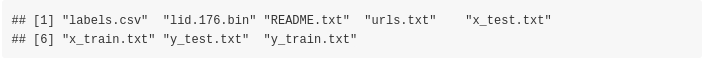
For this benchmark we’ll use only the test data (‘x_test.txt’ and ‘y_test.txt’ files) and we’ll keep only the WiLI-isocodes that intersect with the fastText isocodes,
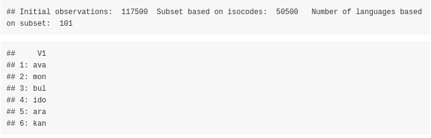
First, we’ll use the smaller pre-trained dataset,
file_ftz = system.file("language_identification/lid.176.ftz", package = "fastText")
dtbl_res_in = fastText::language_identification(input_obj = wili_test_x$V1,
pre_trained_language_model_path = file_ftz,
k = 1,
th = 0.0,
threads = 1,
verbose = TRUE)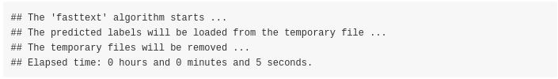
dtbl_res_in$true_label = wili_test_y$V1
# dtbl_res_in
isocodes_fasttext_subs = isocodes_fasttext[, c(1,3)] # merge the predicted labels with the 3-letter isocodes
merg_labels = merge(dtbl_res_in, isocodes_fasttext_subs, by.x = 'iso_lang_1', by.y = 'Alpha_2')
# as.vector(colSums(is.na(merg_labels)))
print_accuracy(size_input_data = nrow(wili_test_y),
true_data = merg_labels$true_label,
preds_data = merg_labels$Alpha_3_B,
method = 'fastText (.ftz pre-trained model)')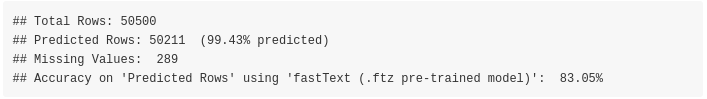
The accuracy of the model was 83.05% (on 50211 out of 50500 text extracts)
Let’s move to the bigger pre-trained model which is mentioned to be more accurate. This model can be downloaded either from the official website or from my Datasets Github repository. The parameter setting of the fastText::language_identification() function is the same as before, and the only thing that changes is the pre_trained_language_model_path parameter which is set to lid.176.bin. Assuming this file is downloaded and extracted in the dir_wili_2018 directory then,
file_bin = file.path(dir_wili_2018, 'lid.176.bin')
dtbl_res_in = fastText::language_identification(input_obj = wili_test_x$V1,
pre_trained_language_model_path = file_bin,
k = 1,
th = 0.0,
threads = 1,
verbose = TRUE)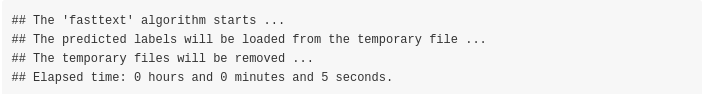
dtbl_res_in$true_label = wili_test_y$V1
# dtbl_res_in
isocodes_fasttext_subs = isocodes_fasttext[, c(1,3)] # merge the predicted labels with the 3-letter isocodes
merg_labels = merge(dtbl_res_in, isocodes_fasttext_subs, by.x = 'iso_lang_1', by.y = 'Alpha_2')
# as.vector(colSums(is.na(merg_labels)))
print_accuracy(size_input_data = nrow(wili_test_y),
true_data = merg_labels$true_label,
preds_data = merg_labels$Alpha_3_B,
method = 'fastText (.ftz pre-trained model)')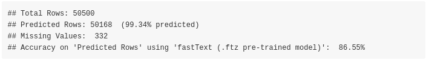
The accuracy based on the bigger model was increased to 86.55% (on 50168 out of 50500 text extracts)
The following plot shows the confusion matrix of the bigger .bin model. The main diagonal is dominated by the dark green color indicating higher accuracy rates,
tbl = table(merg_labels$true_label, merg_labels$Alpha_3_B)
df = as.data.frame.table(tbl)
colnames(df) = c('country_vert', 'country_horiz', 'Freq')
# head(df)
require(magrittr)
require(dplyr)
require(ggplot2)
df <- df %>%
mutate(country_vert = factor(country_vert), # alphabetical order by default
country_horiz = factor(country_horiz, levels = rev(unique(country_horiz))))
plt_tbl = ggplot(df, aes(x=country_vert, y=country_horiz, fill=Freq)) +
geom_tile() + theme_bw() + coord_equal() +
scale_fill_distiller(palette="Greens", direction=1) +
ggplot2::theme(axis.text.x = element_text(angle = 45, vjust = 1.0, hjust = 1.0))
plt_tbl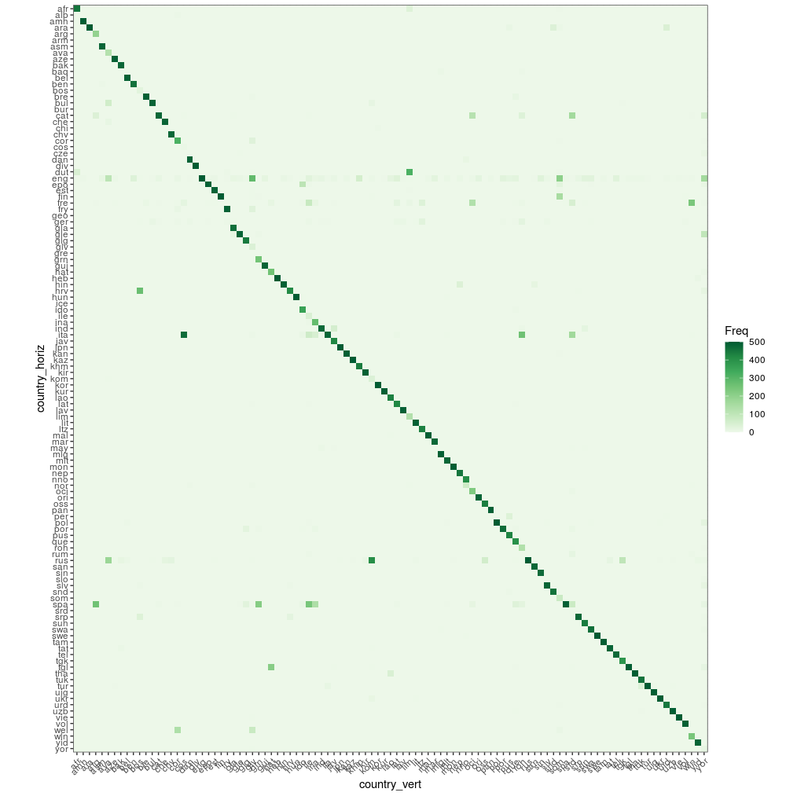
The Google’s Compact Language Detector 2 (CLD2) " … probabilistically detects over 80 languages in Unicode UTF-8 text, either plain text or HTML/XML. For mixed-language input, CLD2 returns the top three languages found and their approximate percentages of the total text bytes (e.g. 80% English and 20% French out of 1000 bytes) …“. Based on the R package documentation,”The function ‘detect_language()’ is vectorised and guesses the language of each string in text or returns NA if the language could not reliably be determined."
require(cld2)
t_start = proc.time()
cld2_vec = cld2::detect_language(text = wili_test_x$V1, plain_text = TRUE, lang_code = TRUE)
cld2_dtbl = data.table::setDT(list(Alpha_2 = cld2_vec))
cld2_dtbl$true_label = wili_test_y$V1
merg_labels_cld2 = merge(cld2_dtbl, isocodes_fasttext_subs, by = 'Alpha_2')
# as.vector(colSums(is.na(merg_labels_cld2)))
print_accuracy(size_input_data = nrow(wili_test_y),
true_data = merg_labels_cld2$true_label,
preds_data = merg_labels_cld2$Alpha_3_B,
method = 'cld2')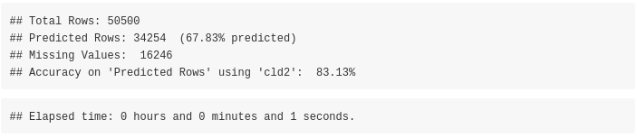
The accuracy of the cld2 package is 83.13% (on 34254 out of 50500 text extracts)
The " … Google’s Compact Language Detector 3 is a neural network model for language identification and the successor of CLD2 (available from) CRAN. This version is still experimental and uses a novell algorithm with different properties and outcomes. For more information see: https://github.com/google/cld3#readme …“. Based on the R package documentation,”The function detect_language() is vectorised and guesses the language of each string in text or returns NA if the language could not reliably be determined."
require(cld3)
t_start = proc.time()
cld3_vec = cld3::detect_language(text = wili_test_x$V1)
cld3_dtbl = data.table::setDT(list(Alpha_2 = cld3_vec))
cld3_dtbl$true_label = wili_test_y$V1
merg_labels_cld3 = merge(cld3_dtbl, isocodes_fasttext_subs, by = 'Alpha_2')
# as.vector(colSums(is.na(merg_labels_cld3)))
print_accuracy(size_input_data = nrow(wili_test_y),
true_data = merg_labels_cld3$true_label,
preds_data = merg_labels_cld3$Alpha_3_B,
method = 'cld3')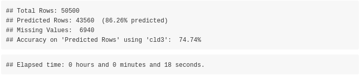
The accuracy of the cld3 package is 74.74% (on 43560 out of 50500 text extracts)
The ‘textcat’ R package performs ‘text categorization based on n-grams’. The documentation of the package mentions: "… TextCat (https://www.let.rug.nl/vannoord/TextCat/) is a Perl implementation of the Cavnarand Trenkle ‘N-Gram-Based Text Categorization’ technique by Gertjan van Noord which was subsequently integrated into SpamAssassin. It provides byte n-gram profiles for 74 ‘languages’ (more precisely, language/encoding combinations). The C library reimplementation libtextcat (https://software.wise-guys.nl/libtextcat/) adds one more non-empty profile.
The category ids are unchanged from the original, and give the full (English) name of the language, optionally combined the name of the encoding script. Note that ‘scots’ indicates Scots, the Germanic language variety historically spoken in Lowland Scotland and parts of Ulster, to be distinguished from Scottish Gaelic (named ‘scots_gaelic’ in the profiles), the Celtic language variety spoken in most of the western Highlands and in the Hebrides (see https://en.wikipedia.org/wiki/Scots_language) …"
Apart from the previous 2 mentioned TC-profiles the ECIMCI_profiles (26 profiles) also exists. In my benchmark I’ll use only the ‘TC_byte_profile’ (75 profiles) and ‘TC_char_profiles’ (56 profiles) as input to the textcat() function to compute the country names, which by default the textcat() function returns. I’ll wrap the function to parallel::mclapply() because I observed it returns the results faster using multiple threads (in my benchmark I used 8 threads).
Before proceeding lets have a look to the available profiles,
threads = parallel::detectCores()
require(textcat)
names(textcat::TC_byte_profiles)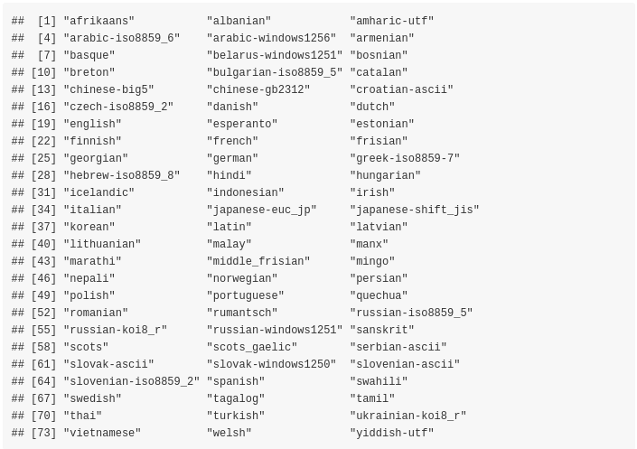
What we want is that the initial lowercase isocodes intersect with the processed TC_byte_profiles so that the computation of the accuracy is correct,
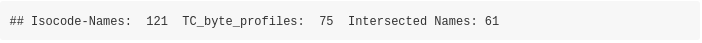
t_start = proc.time()
textc = as.vector(unlist(parallel::mclapply(1:length(wili_test_x$V1), function(x) {
textcat(x = wili_test_x$V1[x], p = textcat::TC_byte_profiles, method = "CT")
}, mc.cores = threads)))
textc = as.vector(unlist(lapply(strsplit(textc, '-'), function(x) x[1])))
textc = trimws(textc, which = 'both')
unique(textc)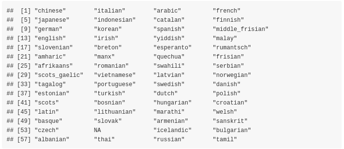
textc_dtbl = data.table::setDT(list(Name_tolower = textc))
textc_dtbl$true_label = wili_test_y$V1
fasttext_isoc_name = isocodes_fasttext[, c(1,5)]
merg_labels_textc = merge(textc_dtbl, fasttext_isoc_name, by = 'Name_tolower')
# as.vector(colSums(is.na(merg_labels_cld2)))
print_accuracy(size_input_data = nrow(wili_test_y),
true_data = merg_labels_textc$true_label,
preds_data = merg_labels_textc$Alpha_3_B,
method = 'textcat ( TC_byte_profiles )')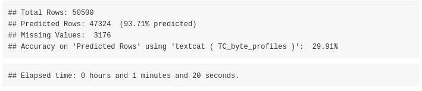
The accuracy of the textcat package using the TC_byte_profiles is 29.91% (on 47324 out of 50500 text extracts)
Again, as previously we can have a look to the available profiles,
names(textcat::TC_char_profiles)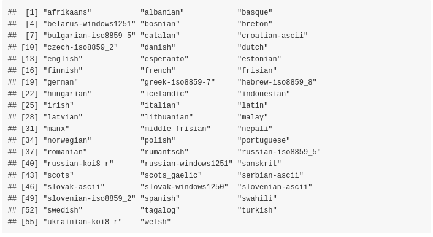
What we want is that the initial lowercase isocodes intersect with the processed TC_char_profiles so that the computation of the accuracy is correct,
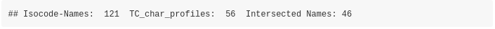
t_start = proc.time()
textc = as.vector(unlist(parallel::mclapply(1:length(wili_test_x$V1), function(x) {
textcat(x = wili_test_x$V1[x], p = textcat::TC_char_profiles, method = "CT")
}, mc.cores = threads)))
textc = as.vector(unlist(lapply(strsplit(textc, '-'), function(x) x[1])))
textc = trimws(textc, which = 'both')
unique(textc)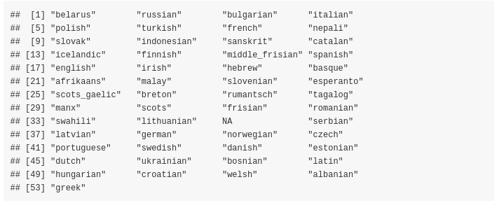
textc_dtbl = data.table::setDT(list(Name_tolower = textc))
textc_dtbl$true_label = wili_test_y$V1
fasttext_isoc_name = isocodes_fasttext[, c(1,5)]
merg_labels_textc = merge(textc_dtbl, fasttext_isoc_name, by = 'Name_tolower')
# as.vector(colSums(is.na(merg_labels_cld2)))
print_accuracy(size_input_data = nrow(wili_test_y),
true_data = merg_labels_textc$true_label,
preds_data = merg_labels_textc$Alpha_3_B,
method = 'textcat ( TC_char_profiles )')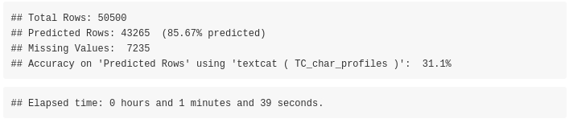
The accuracy of the textcat package using the TC_char_profiles is 31.10% (on 43265 out of 50500 text extracts)
The R package port of Franc has no external dependencies and supports 310 languages. All languages spoken by more than one million speakers. Franc is a port of the JavaScript project of the same name. Based on the documentation of the JavaScript project, " … franc supports many languages, which means it’s easily confused on small samples. Make sure to pass it big documents to get reliable results …"
The franc() function expects a text extract, therefore we will wrap the function with parallel::mclapply() as we’ve done with the textcat package to reduce the computation time. Moreover, we’ll set the min_speakers parameter to 0 to include all languages known by franc (increasing the max_length parameter to 4096 does not improve the accuracy for this specific data / text extracts),
require(franc)
t_start = proc.time()
franc_res = as.vector(unlist(parallel::mclapply(1:length(wili_test_x$V1), function(x) {
franc(text = wili_test_x$V1[x], min_speakers = 0, min_length = 10, max_length = 2048)
}, mc.cores = threads)))
franc_dtbl = data.table::setDT(list(franc = franc_res, true_label = wili_test_y$V1))
# as.vector(colSums(is.na(franc_dtbl)))
print_accuracy(size_input_data = nrow(wili_test_y),
true_data = franc_dtbl$true_label,
preds_data = franc_dtbl$franc,
method = 'franc')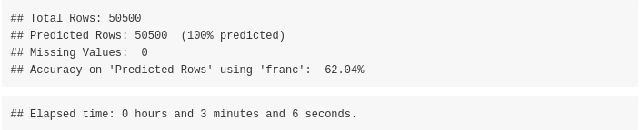
The accuracy of the franc package is 62.04% (on 50500 out of 50500 text extracts)
Sorted by Accuracy (highest better),
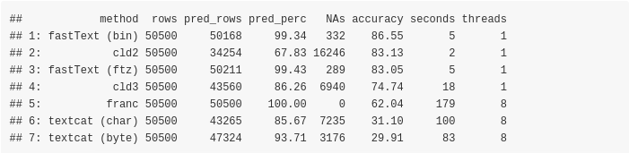
Sorted by predicted percentage of text extracts (highest better),
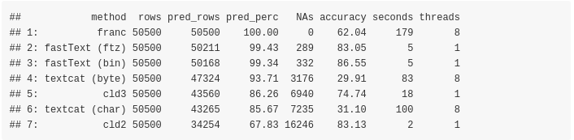
Sorted by missing values (lowest better),
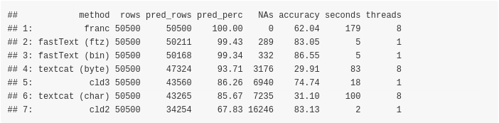
Sorted by computation time (lowest better),
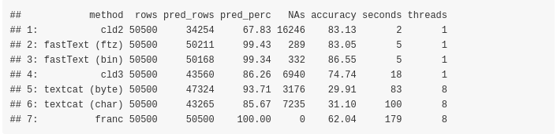
We can test the mentioned functions also using the Declaration of Human Rights text files, which are smaller in size and can give hints on potential misclassifications. As I mentioned at the beginning of this blog post the data can be downloaded from two different internet sources. I’ll use only 3 files from the official website based on the total number of speakers worldwide (the first 3 are: Chinese, English, Spanish) and you can see the full list of the most spoken languages worldwide in the correponding wikipedia article.
Assuming the .zip file is downloaded and extracted in the dir_wili_2018 directory and the folder name that includes the files is named as declaration_human_rights then,
dir_files = file.path(dir_wili_2018, 'declaration_human_rights')
lst_files = list.files(dir_files, full.names = T, pattern = '.pdf')
decl_dat = lapply(1:length(lst_files), function(x) {
iter_dat = pdftools::pdf_text(pdf = lst_files[x])
lang = trimws(unlist(strsplit(gsub('.pdf', '', basename(lst_files[x])), '_')), which = 'both')
lang = lang[length(lang)]
vec_txt = as.vector(unlist(trimws(iter_dat, which = 'both')))
vec_txt = as.vector(sapply(vec_txt, function(x) gsub('\n', '', x)))
idx_lang = which(isocodes_fasttext$Name_tolower == lang)
isocode_3_language = rep(isocodes_fasttext$Alpha_3_B[idx_lang], length(vec_txt))
isocode_2_language = rep(isocodes_fasttext$Alpha_2[idx_lang], length(vec_txt))
language = rep(lang, length(vec_txt))
dtbl = data.table::setDT(list(isocode_3_language = isocode_3_language,
isocode_2_language = isocode_2_language,
language = language,
text = vec_txt))
dtbl
})
decl_dat = data.table::rbindlist(decl_dat)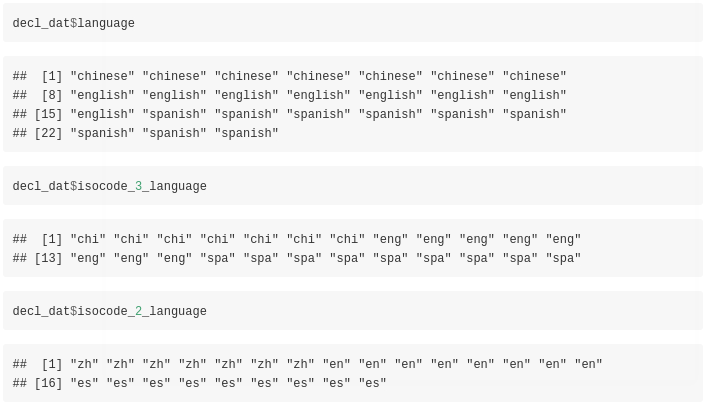
The output data.table includes besides the language also the language isocodes (consisting of 2 and 3 letters) and the text extracts. We can start to identify the language of these extracts using the fastText R package and utilizing the small pre-trained ‘lid.176.ftz’ model,
dtbl_res_in = fastText::language_identification(input_obj = decl_dat$text,
pre_trained_language_model_path = file_ftz,
k = 1,
th = 0.0,
threads = 1,
verbose = TRUE)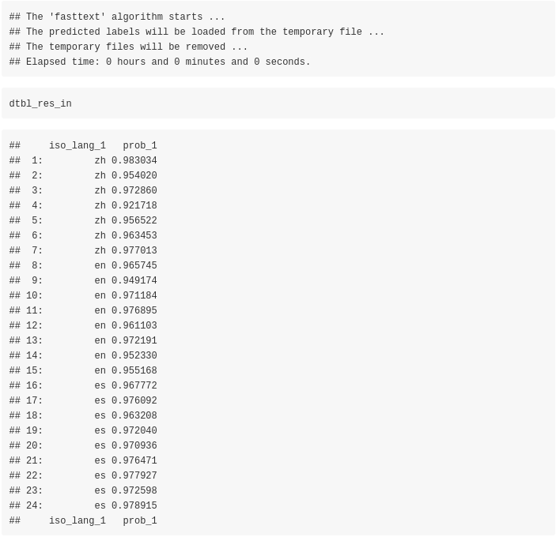
To validate the results we will use the isocode_2_language column of the previous computed decl_dat data.table,
print_accuracy(size_input_data = length(dtbl_res_in$iso_lang_1),
true_data = decl_dat$isocode_2_language,
preds_data = dtbl_res_in$iso_lang_1,
method = 'fastText (.ftz pre-trained model)')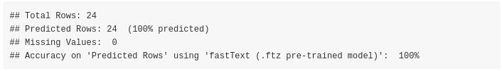
There are no misclassifications for the 24 input text extracts using the fastText algorithm. We can move to the cld2 R package and the corresponding language identification function,
cld2_vec = cld2::detect_language(text = decl_dat$text,
plain_text = TRUE,
lang_code = TRUE)
cld2_vec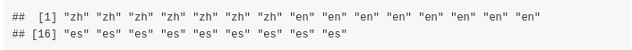
print_accuracy(size_input_data = nrow(decl_dat),
true_data = decl_dat$isocode_2_language,
preds_data = cld2_vec,
method = 'cld2')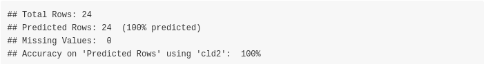
There are no misclassifications for the cld2 algorithm too. We’ll test also cld3,
cld3_vec = cld3::detect_language(text = decl_dat$text)
cld3_vec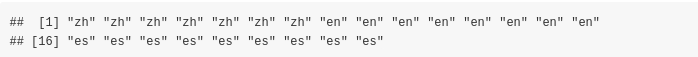
print_accuracy(size_input_data = nrow(decl_dat),
true_data = decl_dat$isocode_2_language,
preds_data = cld3_vec,
method = 'cld3')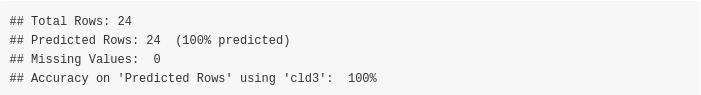
There are no misclassifications for the cld3 algorithm, so we move to the textcat R package. The ‘TC_byte_profiles’ include the ‘chinese-gb2312’ language characters therefore we’ll use these profiles in the textcat function,
textc = textcat(x = decl_dat$text, p = textcat::TC_byte_profiles, method = "CT")
textc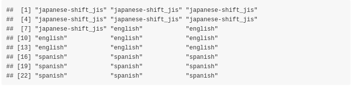
textc = as.vector(unlist(lapply(strsplit(textc, '-'), function(x) x[1])))
textc = trimws(textc, which = 'both')
textc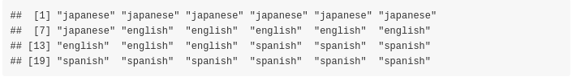
print_accuracy(size_input_data = nrow(decl_dat),
true_data = decl_dat$language,
preds_data = textc,
method = 'textcat')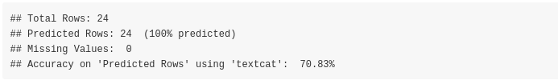
The textcat package misclassifies the chinese text extracts as ‘japanese-shift_jis’, therefore the accuracy drops to approx. 70%. Finally, we’ll test the franc package,
franc_vec = as.vector(sapply(decl_dat$text, function(x) {
franc(text = x, min_length = 10, max_length = 2048)
}))
franc_vec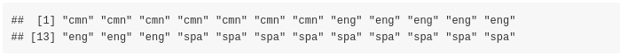
print_accuracy(size_input_data = nrow(decl_dat),
true_data = decl_dat$isocode_3_language,
preds_data = franc_vec,
method = 'franc')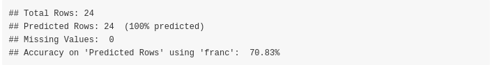
The franc function identified the chinese text excerpts as mandarin chinese, therefore I personally would not consider these as misclassifications (as mandarin is a dialect of the chinese language). We can have an overview of the results of the different methods by illustrating the outputs in a single data.table,
dtbl_out = decl_dat[, 1:3]
colnames(dtbl_out) = c('true_y_iso_3', 'true_y_iso_2', 'true_y_language')
# dtbl_out
dtbl_preds = data.table::setDT(list(fastText = dtbl_res_in$iso_lang_1,
cld2 = cld2_vec,
cld3 = cld3_vec,
textcat = textc,
franc = franc_vec))
# dtbl_preds
dtbl_out = cbind(dtbl_out, dtbl_preds)
dtbl_out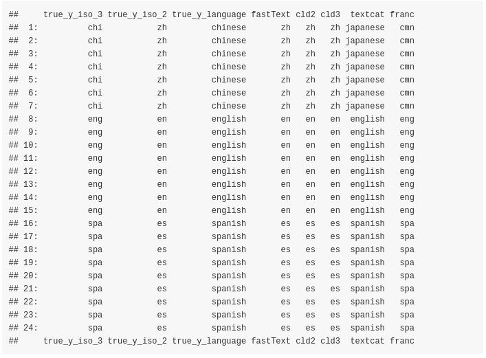
Finally, we can observe the output of fastText, cl2, cl3 and franc for Multilingual output (I’ll exclude the textcat::textcat() function, because it expects a single language per character string in the input vector).
In order to verify the results and see how each algorithm performs we will pick 100 words of each declaration file. Due to the fact that the chinese language has ambiguous word boundaries we will use the stringi::stri_split_boundaries() function of the stringi R package to extract the words of the chinese text file. The following function shows the pre-processing steps to come to the multilingual sentence,
lst_files = list.files(dir_files, full.names = F, pattern = '.pdf')
min_letters_en_es = 3 # min. number of characters for the 'en' and 'es' languages
sample_words = 100 # sample that many words from each tokenized file
decl_dat = lapply(1:length(lst_files), function(x) {
iter_dat = pdftools::pdf_text(pdf = file.path(dir_files, lst_files[x]))
dat_txt = sapply(iter_dat, function(y) {
if (lst_files[x] == 'declaration_human_rights_chinese.pdf') {
res_spl_lang = stringi::stri_split_boundaries(str = y,
type = 'word',
skip_word_none = TRUE,
skip_word_letter = TRUE,
skip_word_number = TRUE)
}
else {
res_spl_lang = stringi::stri_split(str = y,
regex = '[ \n,]',
omit_empty = TRUE,
tokens_only = TRUE)
}
res_spl_lang = trimws(res_spl_lang[[1]], which = 'both')
idx_empty = which(res_spl_lang == "")
if (length(idx_empty) > 0) {
res_spl_lang = res_spl_lang[-idx_empty]
}
if (!is.null(min_letters_en_es) & lst_files[x] != 'declaration_human_rights_chinese.pdf') {
nchars = nchar(res_spl_lang)
idx_chars = which(nchars >= min_letters_en_es)
if (length(idx_chars) > 0) {
res_spl_lang = res_spl_lang[idx_chars]
}
}
res_spl_lang
})
dat_txt = as.vector(unlist(dat_txt))
set.seed(1)
sample_words = sample(dat_txt, sample_words)
sample_words
})
decl_dat = as.vector(unlist(decl_dat))
decl_dat = decl_dat[sample(1:length(decl_dat), length(decl_dat))]
multilingual_sentence = paste(decl_dat, collapse = ' ')
multilingual_sentence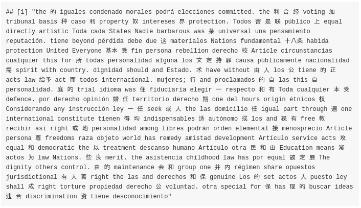
We deliberately mixed the words by first sampling the vector and then concatenating the tokens to a sentence. The purpose of the multilingual identification is to find out if each algorithm detects the correct languages assuming the number of languages in the text are known beforehand.
Imagine, you have 3 people having a conversation in a room where interchangeably a different language is spoken and this conversation is recorded by a fourth person.
num_languages = 3
dtbl_multiling = fastText::language_identification(input_obj = multilingual_sentence,
pre_trained_language_model_path = file_ftz,
k = num_languages,
th = 0.0,
threads = 1,
verbose = FALSE)
dtbl_multiling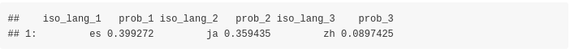
cld2::detect_language_mixed(text = multilingual_sentence, plain_text = TRUE)$classification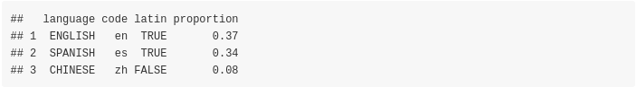
cld3::detect_language_mixed(text = multilingual_sentence, size = num_languages)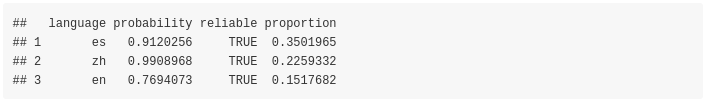
# we could use the 'whitelist' parameter but the purpose is to identify languages from unknown text
franc::franc_all(text = multilingual_sentence, max_length = nchar(multilingual_sentence) + 1)[1:num_languages, ]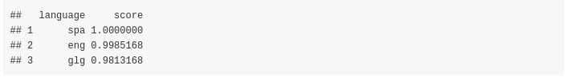
From the results one can come to the following conclusions: